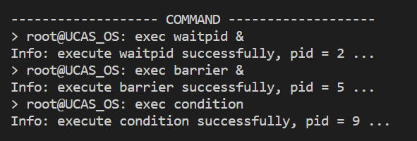
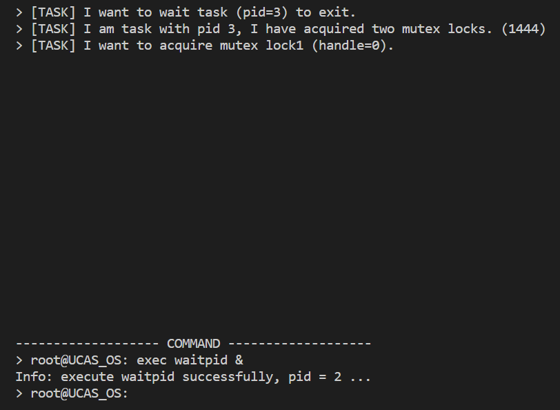
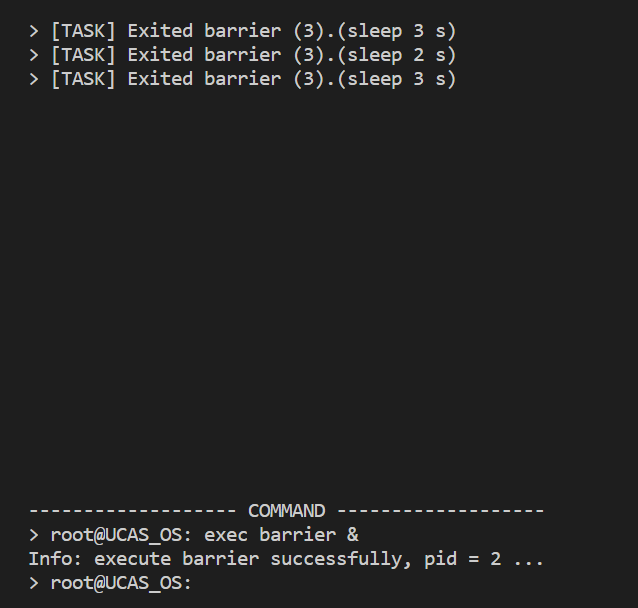
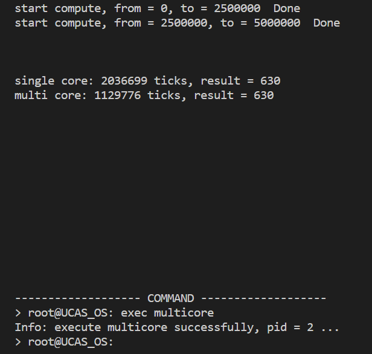
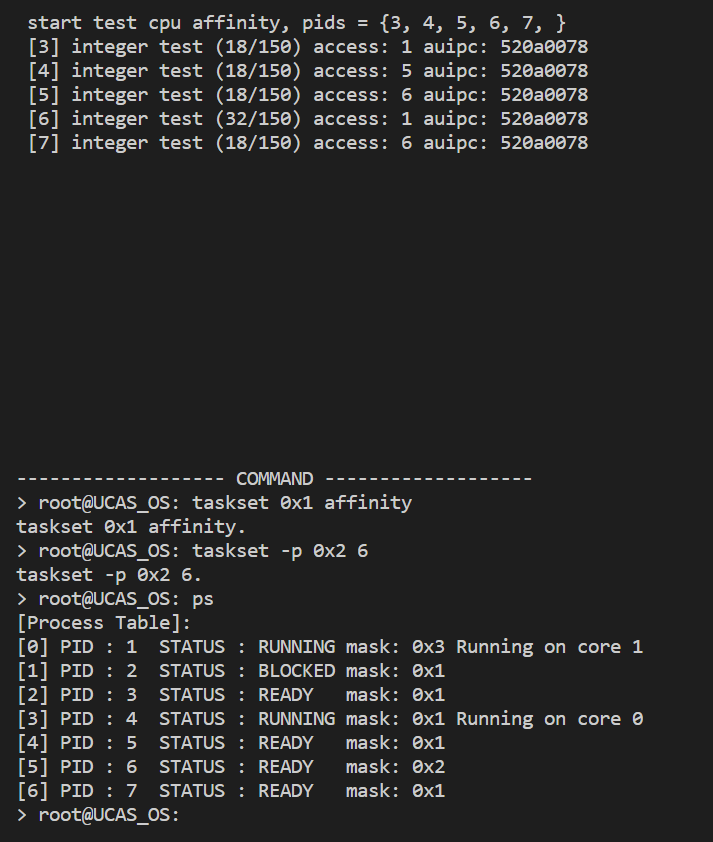

进程管理、通信与多核执行
1. 实验说明
通过之前的实验，我们的操作系统已经具备任务调度与例外处理的功能，并且在用户态运行的进程已经可以通过系统调用接口去调用内核的代码（现在用户态和内核态的界限已经通过代码调用的一些限制体现了出来，这一界限将在后续的虚存中更好地体现出来）。
在这次实验中，我们将继续完善一些任务处理相关的功能，比如：进程的启动、杀死一个正在运行的程序、进程的正常退出、以及进程间的同步、通信等功能。更重要的是，我们将实现一个简单的终端，让我们的操作系统拥有一个简易的UI，交互性更强，真正可以“操作”。
本次的实验内容如下：
任务一 实现一个简易的终端，实现 OS 和用户的简单交互。实现一些终端命令以实现进程在终端上的启动、杀死、状态查询。
任务二 了解屏障（barrier）、条件变量（condition variable）、mailbox 这三种同步方式并实现其功能。
任务三 实现多核的启动，并实现简单的程序多核并行执行及调度。
任务四 实现动态绑核的终端命令 taskset，从而实现动态的将进程绑定在某个核上。
任务五 实现简单的线程机制，解决多核 mailbox 的死锁问题。
在上面的5个任务中，S-core 的同学只需要完成任务一和任务二的屏障功能，A-core 的同学需要完成任务一到任务三，C-core 的同学需要使用双核完成全部五个任务。
下面将本 Project 的各个 core 需要完成的任务列成表格，请同学们在看完任务书之后再对应这个表格，确认需要完成的任务：
| 评分等级 | 需要完成的任务 |
|---|---|
| S-core | shell终端及shell命令，barrier |
| A-core | 全部三种同步原语，通过双核测试 multicore |
| C-core | taskset动态绑核命令以及 mailbox 防死锁，并且双核通过所有的任务 |
2. 本章解读
这一部分的要点是：
-
理解 shell 的作用及其简化的实现
-
理解实现进程通信和同步的多种方式
-
理解多核情况下操作系统的相关处理
这一章其实是在完善我们的小系统。在之前的章节里，我们已经顺利地建立了进程管理和基本的锁。现在，我们要进一步扩展之前的功能，并允许用户进程之间进行交互。
3. 简易shell的制作和基础命令的实现
为了方便我们接下来的任务运行和测试，我们要求同学们在本次任务完成一个小型 shell 的制作。这个终端可以实现用户命令的输入，用户命令的解析，最终根据用户命令的内容，调用内核相关的系统调用。
对于一个终端的定义，在传统的操作系统是比较复杂的。但考虑到任务的难度，我们在这里简化了终端的定义。大家可以简单的认为，我们这里要实现的终端就是**一块屏幕（screen）、**一个可以解析命令的进程（shell）。
3.1. 一块屏幕（screen）
所谓的一块屏幕，我们在 Project 2 的时候就已经用到过了。它实际上就是用我们提供给大家的 screen 库函数来进行操作的。在本次实验大家不需要考虑这部分的具体实现，使用库 printf 将内容打印在屏幕上即可，但是需要补全一些代码。还需要注意 cursor 的信息，在 Project 2 的时候大家可能已经注意到了，cursor 决定了输出在屏幕上的位置。
3.2. 一个可以解析命令的进程（shell）
shell 本质上其实是一个进程，只不过它的功能比较特殊，它负责用户和内核的交互。再具体的说，shell 负责从用户读取命令，将命令传递给内核执行，并将结果反馈给用户。
我们从命令的执行流程来分析 shell 的功能：
-
从输入流读取数据，这里的数据流实际上就是串口输入，关于串口输入的读取，我们在本次实验中已经给大家提供了现成的函数，大家直接用就可以了。
-
读取到了命令后，shell 要做的就是解析，根据用户的输入判断用户要执行什么命令，如果输入有效就调用内核相关的系统调用。
-
最后，用户输入了一串字符串，shell 进程虽然读到并解析了，但是并没有打印到屏幕上，用户也看不见，因此 shell 需要将读取到的字符串打印到屏幕上。
串口输入函数由 BIOS 提供，函数名为bios_getchar，在 Project 1 的时候大家已经用过。请大家将其封装为系统调用以后在实现 shell 的时候使用。
3.3. 任务1：终端和终端命令的实现
实验要求
请实现以下功能：
-
可以实现用户命令输入的读取、解析、显示，根据用户输入调用相关系统调用。支持对输入的删除（完成对退格键的支持）。
-
分开显示该终端启动的任务输出和用户的命令输入。
-
实现ps (process show) 命令，实现系统调用
sys_ps，在终端输入ps可以打印出正在运行的任务列表。 -
实现 clear 命令，输入
clear可以实现清屏。 -
实现对无法识别的命令的处理，输出
unknown command报错并返回到shell命令提示符
最终效果的参考下图，下半屏幕用于shell的输入输出，上半屏幕用于测试用例的输出：

Tip
除了上述的需要要实现的功能，同学们还可以根据自己的理解去完善，比如实现滚屏等额外的功能。
注意事项
test/shell.c文件中要实现 shell 的相关处理操作。shell 在本次实验中担任着启动所有任务的角色，因此我们应该在内核初始化之后，就把 shell 启动起来，将它作为 pid 号为 1 的第一个用户态进程。
此外，shell 输入应支持退格键，在输入错误时用退格键删除之前的输入，这需要同学们补全screen.c中screen_write_ch的代码。
在实现getchar功能的时候建议将字符读入到一个小的 buffer 中，等到用户按回车键时，判断 buffer 中的内容，是否是某个命令。对于每个命令分别设置相应的处理函数，实现该命令的功能。使用小 buffer 的原因是用户可能会输入退格键，直接试图根据输入的字符做个状态机解析可能会比较麻烦。等输入完了再解析稍微省事一点。
自己测试的时候，能够看到输入的回显（这个也需要自己写），能够输入并解析些简单命令就可以进入下一节的内容了。
S-core 注意
对于做 S-core 的同学，由于在 P2 中没有实现定时器中断，因此需要注意 shell 在使用while循环反复试图获取终端字符时，会阻止其他进程的执行，因此需要实现一个机制，让 shell 在一段时间都获取不到输入时主动放弃执行。
3.4. 进程的创建和退出
在之前实现中，我们对一个任务的创建是放在init_pcb中，也就是初始化 PCB 里，并没有单独的系统调用去完成一个任务的创建，并且我们的任务一旦运行起来是无法正常退出的。
因此，在本次实验我们将完成任务的创建方法（exec）、退出方法（exit），以及杀死一个任务的方法（kill），等待一个任务的方法（waitpid），并为之封装系统调用，其中 S-core 的 exec 实现要求与 A/C-core 不同，约定如下表所示。
| 函数签名 | 分S-core与A-core |
|---|---|
| S-core | pid_t sys_exec(int id, int argc, uint64_t arg0, uint64_t arg1, uint64_t arg2) |
| 参数说明 | id为任务的 id ，argc为传递给任务的参数个数，在该接口中最多有三个，arg0/1/2分别对应三个参数 |
| A/C-core | pid_t sys_exec(char *name, int argc, char **argv) |
| 参数说明 | name为任务的名称，argc为命令行传入参数的总个数，*argv[]是一个指针数组，里面存放的指针指向对应的命令行参数 |
| 功能 | 启动一个新的进程 |
| 返回值 | 成功返回新启动进程的 pid ，失败返回 0 |
| 函数签名 | int sys_kill(pid_t pid) |
|---|---|
| 参数说明 | pid为需要被 kill 的进程的 pid |
| 功能 | 杀死指定进程，回收分配给它的资源 |
| 返回值 | 成功时返回 1 ，找不到对应 pid 的进程返回 0 |
| 函数签名 | void sys_exit(void) |
|---|---|
| 功能 | 退出当前任务，并回收当前任务的资源 |
| 函数签名 | int sys_waitpid(pid_t pid) |
| 参数说明 | pid为需要等待的进程的 pid |
| 功能 | 等待对应 pid 的进程程执行完毕。 |
| 返回值 | 返回等待进程的 pid ，如果不存在对应 pid 的进程则返回 0 |
3.5. 任务1续：exec、kill、exit、waitpid方法的实现
实验要求
完成 exec、kill、exit、wait 的系统调用，通过我们给定的测试集。
文件介绍
本实验请大家根据自己之前的代码继续实现。
实验步骤
-
实现上述的四种内核方法：
exec、kill、exit、wait，并为其封装系统调用后方可进行测试集的运行。 -
请大家先仔细阅读本任务的注意事项后再开始本次任务。
-
本次实验实现的
exec命令对不同的等级要求不同，对于 S-core 而言需要实现exec [id]命令的解析；A/C-core 的同学需要实现exec [name]命令的解析：比如用户输入exec waitpid，则启动 waitpid 任务。对于 A/C-core 的exec命令，我们还需要大家实现一个小的附加功能：shell 在成功加载对应的进程并获得其 pid 之后，默认执行sys_waitpid等待该进程执行完毕。并且支持加上&选项使得 shell 不用等待新加载的进程执行完毕。其实只需要大家在解析用户输入命令时判断是否带有&选项并调用sys_waitpid即可，本次实验中所有的任务都以这样的方式启动运行。如图所示。

- S-core 通过
exec [id]（id 为 waitpid 任务的 id）；A/C-core 的同学通过exec waitpid &启动 waitpid 任务，该任务的描述间见下表。
| 任务 | 描述 |
|---|---|
ready_to_exit |
申请两把锁，过一段时间后退出。 |
wait_lock |
请求 task1 获得的一把锁，但是由于 task1 占用该锁，task2 会被阻塞并打印出 I want to acquire a mutex lock from task.。直到task1退出任务后释放该锁，task2 会继续执行，打印出 I have acquire a mutex lock from task 后退出。 |
wait_exit |
启动ready_to_exit和wait_lock两个任务。并将第一个任务的 pid 传给第二个任务 调用sys_waitpid系统调用函数，等待 task1 退出。task1 退出后会继续执行，打印出 task has exited 后退出。 |
- 实验成功的结果如图所示。

- 在 shell 中实现
kill [pid]命令的解析：允许用户终止某个进程的运行。如果进程被 kill 之后持有锁，需要释放内核管理的相关资源。
注意事项
-
对于做 S-core 的同学，由于我们无法确定对应任务的id，因此需要自己按照提示修改
./test/test_project3/waitpid.c文件中传递给sys_exec的任务 id。此外在编译时需要将Makefile文件中的"CFLAGS"开头的一行末尾添加-DS_CORE"，以启用 S-core 版本的测试代码，未来的实验中也会继续沿用。 -
本实验要求通过
exec启动的新任务可以接受参数，既然用户进程是操作系统来创建的, 很自然参数的传递就需要由操作系统来负责。此处的实现对于 S-core 和 A/C-core 也有不同的要求。S-core：对于 S-core 而言，为了降低难度，我们要求大家实现简单的参数传递，需要 shell 解析之后直接将数值传递给内核，由内核将数据填入初始化进程相应的上下文寄存器，并且需要注意在跳转到用户程序 main 函数执行之前不要破坏相应的寄存器中的值。想必大家也注意到了，受到寄存器数量的限制，这样的方式传递的命令行参数数量是有限的，并且只支持传递一个数值，不够灵活。因此我们鼓励大家尝试实现A/C-core的命令行参数。
A/C-core：对于 A/C-core 而言，我们要求大家实现较为标准的命令行参数，也就是大家在程序设计课上学习过的
argc和argv，最适合存放命令行参数的地方就是用户栈了， 因为在首次切换到用户进程的时候, 用户栈上的内容就已经可以被用户进程访问。 于是操作系统在加载用户进程的时候, 还需要负责把argc/argv以及相应的字符串放在用户栈中，在我们的实验中由shell执行sys_exec时，将命令行参数传递给操作系统，由操作系统系统将其拷贝到新打开的进程的栈上。因此我们需要在初始化进程时在用户栈上开辟出一部分空间来保存命令行参数信息（包括指针数组argv和其指向的命令行参数），具体的格式可以参考图，（应用传递了两个命令行参数"aa"和"bb"，该图把这些参数分成两部分, 一部分是字符串区域, 另一部分是argv字符串指针数组, 数组中的每一个元素是一个字符串指针, 而这些字符串指针都会指向字符串区域中的某个字符串），此外，为了实现的简单我们建议大家在初始化进程上下文时将命令行参数的个数（argc）和指针数组的地址（argv）分别放到新进程上下文的a0和a1寄存器中，这样就可以在进入到用户程序的main函数时使用了，需要注意在跳转到用户程序main函数执行之前不要破坏 这两个寄存器的值。

-
在实验中，需要注意一个细节 RISC-V 的 ABI 要求栈指针的地址是 128 bit 对齐的。在启动用户进程的时候建议大家遵循这一点，以免出现意料之外的问题。
-
本次任务，虽然看起来比较直观，但是需要注意的细节很多，特别是在一个任务退出时需要将其占有的资源全部释放，比如：栈空间、pcb 等。
-
pid是由
sys_exec返回的，进而通过sys_exec传递给第二个进程。因此，这里不需要特意让某个进程的pid是某个预设好的值。
4. 同步原语
在 Project 2 的时候，我们实现了进程的运行和调度，但是两个进程之间如果需要进行同步，则需要比较复杂的机制。例如我们在 Project 2 里面实现的锁，通过操作系统提供的锁服务，两个进程可以对某个临界区数据进行保护，并分别进行访问和操作。而在这一节的内容中，我们将介绍几种常见的同步原语，并由同学们在自己的操作系统中实现它们。
值得一提的是，就做到 Project 3 的现实情况而言，我们这里依然很难清楚的在操作系统里面区分进程和线程的概念。这是因为我们现在还没有实现内存空间的隔离和虚拟内存管理，进程之间使用完全隔离的内存空间这一特性很难体现。所以要强调的是，研讨课这里只是为了简化线程和进程的区别，实际上它们两者的区别还是希望大家通过理论课的学习和后续研讨课 Project 4 的内容来扎实的理解。到 Project 3 为止我们依然希望大家类似 Project 2 的情况，通过代码调用来体现进程之间的隔离。
注意
目前我们的框架中并不支持原有的atomic_cmpchg和atomic_cmpxchg_d原子操作。请大家仅使用框架中提供的atomic_swap和atomic_swap_d来实现本节的内容。
4.1. 屏障（barriers）
这一节开始我们介绍我们要实现的各种同步原语，首先从屏障开始，barriers 是一种同步机制，一组进程的 Barrier 可以用来同步该程序组，只有当该程序组中所有进程到达屏障点（可称之为同步点）时，所有程序才得以继续执行。
屏障可以告诉一组进程在什么时候完成了各自的任务可以接下来进行其他的工作，即一旦所有的进程都到达了屏障点，它们才能够继续执行下去，否则先到达屏障点的进程就会在此处等待其他进程的到来，因此屏障操作是一个相当重量级的同步操作。
4.2. 条件变量（condition variables）
条件变量是一种同步机制，允许进程挂起，直到共享数据上的某些条件得到满足，用于多线程之间的通信。条件变量上的基本操作有：触发条件(当条件变为 true 时)；等待条件，挂起线程直到其他线程触发条件。
条件的检测是在互斥锁的保护下进行的。如果一个条件为假，一个进程自动阻塞，并释放互斥锁。如果另一个进程改变了条件，它发信号给关联的条件变量，唤醒一个或多个等待它的进程，该进程重新获得互斥锁，重新评价条件。
4.3. 任务2：实现同步原语：barriers、condition variables
实验要求
了解操作系统内进程间同步的机制，学习和掌握壁垒（barriers）和条件变量（condition variables）的原理和实现方法。针对这些同步原语，我们要求实现 start code 中的相关函数。
注意
做 S-core 的同学只需要完成 barriers 。
文件介绍
请基于任务 1 的代码继续进行实现。
实验步骤
-
实现 condition variables、barriers 的内核代码并为之封装系统调用。
-
请大家仔细阅读注意事项后再开始本次任务
-
屏障测试：对于 S-core 而言 shell 输入
exec [id]，id为 barrier 任务的 id ；对于 A/C-core 而言 shell 输入exec barrier &启动barrier测试任务，该测试是三个进程不停的进入屏障，只有当3个进程都达到屏障后才会解除阻塞，进行下一轮的进入。如果只有两个进程达到屏障，那么它们会被阻塞，直到第三个达到屏障。由于屏障的存在，三个进程打印出的循环次数应该是一起增长的。如图所示。

- 条件变量测试：shell 输入
exec condition &启动 condition variables 测试任务，这个测试是一个基于条件变量实现的简单而经典的生产者消费者模型，感兴趣的同学可以看代码了解一下实现。其中测试程序会启动一个生产者进程负责生产产品，之后再启动多个消费者进程负责消费产品。当然，如果你的条件变量实现正确，那么生产者产生的商品总数是和消费消费的商品总数是一样的，如图所示。为了确保正确性，线程会睡眠随机长的时间，从而模仿每个消费者的速度不同的情况。

注意事项
-
S-core的同学按照提示修改
./test/test_project3/S_CORE/barrier.c文件中传递给sys_exec的任务id。 -
同步原语是操作系统中的一个重要部分。针对不同的场景，可以选择合适的同步原语进行使用，它们的本质都是对临界区的保护，实现进程间的同步。
4.4. mailbox通信
在本节，大家将实现更复杂的一种通信方式 mailbox ，通俗的而言就是一个类似于信箱的东西，发送方将信息存到信箱里，接收方从信箱里取出信息，这样就实现了进程间的通信。
具体来说，所谓的 mailbox 通信就是为两个任务建立一个公共的临界区，进程 1 把想发送给进程 2 的数据放到里面，进程 2 再从里面拿出来，这样就完成了一次进程的通信。虽然听起来似乎很简单，但其实想实现出来也需要考虑很多问题，比如：如果一个任务想往临界区放数据，但是临界区空间不足了怎么办？如果一个任务想从临界区读数据，但是临界区空了怎么办？临界区肯定存在同时被多个进程访问的情况，如何保证访问的原子性？
因此在本章节，同学们将实现一个 mailbox 通信功能去实现进程间的通信，同时保证数据的一致性。当然请大家注意，这一节我们强调的是进程间的通信，也就是说我们不允许两个进程之间共享同一个变量或者内存地址。所以向其他进程的信箱发送信息或接收自己信箱的信息应该使用信箱的名字而非信箱的变量。操作系统才是那个根据信箱名字来真正投递信件或返回信件内容的实体。
4.5. 任务2续：进程间的通信------mailbox实现
实验要求
实现进程间的通信，使用之前实现的同步原语去保证临界区的正常访问，并通过我们给出的测试集。关于进程通信的接口申明，已经写在了tiny_libc/include/unistd.h中，请同学们根据接口进行实现。表为接口的描述。
| 函数名 | 说明 |
|---|---|
sys_mbox_open(name) |
根据名字返回一个对应的 mailbox ，如果不存在对应名字的 mailbox ，则返回一个新的 mailbox 。 |
sys_mbox_close(mbox_idx) |
关闭 mailbox ，如果该 mailbox 的引用数为0，则释放该 mailbox 。 |
sys_mbox_send(mbox_idx, msg, msg_length) |
向一个 mailbox 发送数据，如果 mailbox 空闲空间不足，则产生一个阻塞，直到把数据放进去。 |
sys_mbox_recv(mbox_idx, msg, msg_length) |
从一个 mailbox 接收数据，如果 mailbox 没有足够的数据，则产生一个阻塞，直到读到数据。 |
文件介绍
请继续之前的代码继续完成。
实验步骤
-
完成 IPC 相关接口实现。
-
本次的测试任务为
mbox_server和mbox_client，mbox_client为客户端，测试时会启动多个，mbox_server为服务端，只启动一个。首先 shell 输入exec mbox_server &启动 mailbox 服务端，随后输入exec mbox_client &依次启动客户端。
对于本次的测试，我们准备一个复杂的测试场景。两个或更多的进程为发送 mail 的进程，一个进程为接收 mail 的进程。发送 mail 的进程不断的发出长度随机的字符串，而接收 mail 的进程要不断的将从 mailbox 中接收到的的字符串长度打印出来。由于发送进程也会打印自己发送的长度，因此接收进程收到的字符串长度应等于所有发送 mail 进程发出的字符串长度总和。并且我们还模仿网络包添加了校验功能，可以从mbox_server打印的 errorBytes 判断传递的信息是否正确。
由于多个进程在同时向同一个进程的 mailbox 里面发送字符串，因此到了一定时间之后接收进程的 mailbox 就会满，此时则发送就会失败。 注意发送失败的具体判断条件应为要发送的字符串长度大于 mailbox 的剩余空间长度。
5. 多核CPU的支持
现在我们需要切换到双核处理器，把两个核的定时器中断都打开，让两个核能同时处理不同的进程，充分利用多核处理器的优势。显著的优势往往伴随着巨大的挑战，在实现双核的过程中，大家需要思考许多问题：
思考
如何启动双核？
开启从核的定时器中断之后需要怎样对就绪队列进行管理？
是设计成双核共用一个就绪队列还是采用每个核各自管理各自的队列？
此外还需要思考双核的例外处理是否共用一套代码，如果共用一套例外处理的代码，那么当两个处理器核同时陷入内核时就需要保证只能有一个核能对内核进行访问，此时需要思考应该采用什么机制来对内核进行保护。
除此之外，双核操作系统的设计还需要考虑进程间通信的问题。因此，想要实现双核的操作系统，有很多设计都需要重新考虑。
5.1. 多核的启动
QEMU：通过 make debug-smp来启动双核的 debug 窗口，用 make run-smp 在 QEMU 上运行双核，注意需要使用loadbootm才能加载 QEMU 双核。
开发板：在上电看到 Nutshell 的大写 logo 之后，通过loadboot启动单核，loadbootm启动双核。
两个处理器核心都包含完整的一套寄存器（通用寄存器及特权寄存器）以及一级 cache 。对于双核实验来说，最需要弄清楚的事情是我们如何从主核控制从核执行代码。不同的体系结构略有差别，但最核心的一点是相通的，就是利用中断机制。在前面的实验中我们直观地理解了，中断可以使处理器核跳转到某个指定的地址。因此，让从核执行代码的方式也是利用中断的这个特性。我们只需要让从核触发中断，自然可以让从核执行代码（中断处理函数就是我们的代码，只要能执行起来，后面都由我们控制）。
那么怎么产生中断呢？对于多核系统，有一种特殊的中断叫做核间中断 (Inter-Processor Interrupt, IPI)。核间中断就是从一个核心发往另一个核心的中断。
对于 RISC-V 处理器来说，有一个专门的 send_ipi(const unsigned long *hart_mask) 可以用于触发核间中断。如果不指定hart_mask的话，这个函数会给所有的核心发一个软件中断 (software interrupt)，这个函数我们已经提供给大家。
Note
mask在同学们未来的计算机学习历程中，很可能会常常出现。请同学们尝试理解此处hart_mask的含义，并试图了解该使用何值作为参数。
另外，RISC-V 处理器核一启动其实两个核心就都自动起来了，会自动都跳到 boot loader 开始执行（先后顺序不一定，甚至可能是从核先执行）。在跳入到 boot loader 时，a0寄存器会存放处理器的 id 号（该 id 号可以从mhartid这个 CSR 中读出）。各个核心的mhartid号不同，但肯定会有一个核心的 id 号为 0。你可以将这个 id 号为 0 的处理器作为主核。
唤醒从核需要注意的是，主从核都需要栈空间来运行，为了避免主从核相互影响，需要为每个核设置其独立的栈空间用于启动。
本次任务需要大家实现双核启动，需要看到两个核心都进入到了内核的main函数中。可以在main函数中用printk打印核心id，从而判断是否两个核心都工作起来了。
5.2. 从核的例外处理
从核的例外处理流程和主核相同，因此，可以让主核和从核共用一套例外处理的代码。对于主核来说，主核负责完成操作系统的所有必要的初始化工作，之后，从核只需要做必要的设置（如中断入口、定时器中断等）即可正常工作。
由于双核是同时执行的，如果两个核心同时执行内核代码，访问共享的内核变量，就可能造成同步相关的错误。因此，需要将共享的变量或一些不能打断的过程设置为临界区，用锁保护起来。为了便于大家快速实现多核，这里建议大家使用 Linux 早期的策略：实现一个大内核锁。也就是将内核整个作为一个临界区，用一把大锁锁住。每次进入内核时立刻上锁，退出内核时解锁。
大内核锁的实现依赖于前面的实验提到过的原子指令。因为双核是同时执行的，所以为了能够实现双核间的同步，只能利用原子指令提供的原子性。因此，需要利用前面提到的原子指令实现一个自旋锁，再将这个自选锁作为大内核锁使用。
当然，除了大内核锁以外，还有多种方案可以实现多核支持。比如现在的多数操作系统都会细粒度地对共享的数据结构加锁。本实验不要求使用细粒度锁，但是我们的内核中共享的数据结构并不是非常多，感兴趣的同学可以在完成双核实验后进一步完成细粒度锁并实验细粒度锁与大内核锁的区别。当然，并不是加了锁保护了就可以直接跑起来，因为有一些变量只有一个是不行的。比如current_running，多核情况下，其实可以有多个正在运行的进程，只用一个变量显然是管理不了的。此外，调度队列要不要每个核心各有一个？多核对于 screen 的输出会有何影响？这些问题都需要考虑。有些在大内核锁的保护下，只有一份就可以了，有些也许需要多份。也有些用一份或者多份都可以。例如，调度队列其实全局就一个是完全可以的，每个核放一个也是可以的，全凭自己根据自己代码的具体情况思考设计。
5.3. 主核和从核的工作
在我们的代码中，开发板一上电，主核和从核就都启动起来了，那主核和从核需要做什么工作呢？这里我们需要大家仔细思考一下，提示大家注意以下几个方面：
-
内核BSS段的清空。
-
内核全局变量的初始化，比如系统调用表。
-
例外处理入口及相应的寄存器设置
5.4. 任务3：开启双核并行运行
实验步骤
-
启动双核，打开从核的定时器中断，让两个核都能进行定时器中断处理和进程调度。
-
shell 输入
exec multicore启动 multicore 测试。测试效果如图所示，可以看到双核相对于单核的加速比达到了 1.8 ，在对这个实验检查时，我们希望看到单核耗时/双核耗时的比值越大越好.

注意事项
-
在开启从核的例外处理之后，就可以去运行
multicore.c中的测试用例，在这个过程中，可能会遇到单核时没有出现过的 bug ，这就说明之前的系统的实现有问题，在双核运行时暴露出来了，这也是实现双核的一大挑战！ -
在用 QEMU 进行双核调试时在可以使用 gdb 命令
info threads来查看两个核当前运行到什么位置。 -
由于开发板的主频比较低，在做该实验时，建议将定时器中断设置为每秒100次这个量级。
5.5. 任务4：shell命令taskset————将进程绑定在指定的核上
到目前为止，我们的操作系统和应用程序都是运行在真实的物理地址上的。在 Project 1 当中我们就让大家实现了将用户程序加载到内存中并执行的操作。在目前的情况下我们仍然需要做到：应用知道自己会被加载到某个地址运行，而内核也确实能做到将应用加载到它指定的那个地址。这算是应用和内核在某种意义上达成的一种“协议”。为什么需要有这么苛刻的条件呢？请大家回顾一下计算机组成原理课的指令寻址方式的内容并调研位置无关代码和重定位的知识。在我们目前的代码框架中，我们通过链接器脚本和 Makefile 文件相互的协同来实现使每个用户程序有自己的运行空间，在这里提示大家去查看 Makefile 中用户程序编译的部分。
在本次实验当中我们需要并发多个代码，功能完全相同的测试程序来体现同步操作。同样的，理论上来说我们也需要为每个测试程序都编译一个可执行文件并指定一个在内存中运行的地址空间来保证应用和内核的这种“协议”。但是这样的做法不仅浪费内存，而且显得过于“丑陋”。那在目前的机制下我们就无法解决这个问题了吗？答案是有的。在我们的本次的测试设计中我们将会加载同一个测试程序多次。对于 C-Core 任务，我们要求对同一个程序的多个副本，image 里只有一份代码，加载到内存中也只有一份代码。相当于多个进程同时运行在同一份处于内存中的程序映像上。共享同样的代码和一些数据，不过拥有自己的内核栈和用户栈。这样的操作需要满足什么条件呢？首先肯定要保证运行时一个进程的数据不会被另一个进程篡改，目前需要通过特殊的代码编写手段来解决这个问题。更多的细节还需要大家多多思考。后续为我们的操作系统添加虚存机制后，每个进程都有自己的内存空间。可以很好的实现进程之间的内存隔离，这样的问题便迎刃而解了。
在实际的系统中，有时我们需要让某个进程在特定的处理器核上执行。例如一些情况下为了提升性能，会让线程固定在某个核心上，这样就不会由于在核间反复迁移导致无法充分利用处理器的 Cache 中的数据。在本任务中，我们来实现这一功能。同时，为了能够更直观地展示该功能，需要扩展 ps 命令，让它能够显示每个进程允许在哪个核上执行。对于正在运行的线程（不是 ready 的，而是正在 running 的），输出它在哪个核上运行。测试用例在affinity.c中，该测试会自动启动 5 个子任务。子任务循环完成计算，每计算一部分会输出提示信息。
绑定处理器核通过 taskset 命令完成。该命令有两种形式：
taskset mask [任务名称] 启动任务并设置其允许运行的核为 mask
taskset -p mask pid 设置进程pid的允许运行的核为 mask
mask 是一个 16 进制数，每一位代表是否运行进程运行在该核心上。比如0x1代表只运行在核0上面。0x2代表只允许运行在核1上面。0x3代表允许运行在核 0 和核 1 上面。
第一种形式类似于之前实现的 exec 的功能，只不过可以为被启动的任务指定一个 mask ，来说明它被允许调度到哪个核心上。第二种形式是为已经运行的进程设置 mask 的。
这里需要大家额外支持一个功能，就是在一个任务通过sys_exec启动子任务时，如果没有通过显式的指定 mask ，则自动继承父任务的 mask 。
实验步骤
-
实现 taskset 命令。
-
运行给定的测试用例，效果如下图所示。测试方式是先用 taskset 让 affinity 任务启动，mask 设置为 0x1 ，也就是只允许在第一个核心上面运行。之后 ps 看到它以及它开启的子任务确实是都在第一个核心上运行的。之后选择一个 affinity 开启的子任务，用 taskset 将 mask 设置为 0x2，之后再 ps ，看到该任务在第二个核心上运行，同时该任务运行的速度比其他的任务都快（过几轮循环后应该会明显快于其他任务）。
-
此外可以看到打印的过程中，access 会随机打印出 1 到 7 之间的数值，这是一个绝对地址的访问，用于检测大家是否按照内核与应用程序的“协议”将应用程序加载到对应位置，并且注意到五个任务的 auipc 输出都是一样的，标志着他们在同一个地址空间上运行，共享代码空间。

5.6. 任务5：多核mailbox防止死锁
在前面的实验中，我们已经实现了基于 mailbox 的进程间通信机制，能够支持不同进程之间进行消息发送与接收。然而，当多个进程（或核）在并发访问多个 mailbox 时，如果资源分配和同步控制不当，系统可能陷入死锁（deadlock）。
实验描述
考虑如下场景：
-
进程 A：先从
mbox2读取数据，再向mbox1发送数据； -
进程 B：先从
mbox1读取数据，再向mbox2发送数据;
若在某一时刻，mbox1 和 mbox2 都已满，而 A、B 同时尝试执行 send 操作，则两个进程都将阻塞，形成典型的循环等待死锁。在实际系统中，这种死锁常由资源请求顺序不一致或同步策略设计不当引起。
为避免该问题，同学们需要为每个进程设计一个简单的线程机制。例如，在进程 A 中创建两个线程：一个专门负责从 mbox2 接收数据，另一个专门负责向 mbox1 发送数据。通过将发送与接收操作分离，使得每个线程在执行时仅请求单一类型的资源，从而避免同时“占有并等待”多个资源。该设计破坏了死锁产生的必要条件之一——占有且等待，从而实现系统的无死锁运行。
实验要求
-
死锁复现：
编写测试程序，按照上述场景复现死锁现象，在程序初始化时，将两个 mailbox 都填满，再进行对 mailbox 发送和读取数据。要求在多核环境下运行，验证当两个 mailbox 均满时，且 A 和 B 进程同时尝试send操作时，A 和 B 进程均阻塞无法继续执行。 -
线程机制设计：
实现一个最小可行的线程框架，包括线程创建、切换、同步与退出等功能。可参考pthread的接口形式（如thread_create、thread_join），但允许根据系统现有支持自行简化实现。 -
死锁规避实现：
基于所实现的线程机制，修改进程 A 与 B 的通信逻辑，将发送与接收操作分配给不同线程，通过异步协作避免资源循环等待。 要求能够稳定运行，不出现阻塞现象。